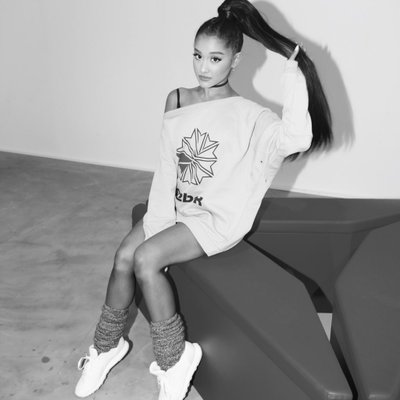

IDOL 2017
Ariana Grande
Ariana Grande, w³aœciwie Ariana Grande-Butera – amerykañska piosenkarka R&B i pop, kompozytorka oraz aktorka.
Ariana zaczê³a swoj¹ karierê wystêpami podczas lokalnych imprez sportowych organizowanych g³ównie na Florydzie.3 wrzeœnia 2013r.
ukaza³ siê jej prawdziwy debiut – pierwszy album o tytule Yours Truly, który zosta³ wydany przez wytwórniê Republic Records. Album od razu zadebiutowa³ na #1 miejscu na liœcie Billboard 200 oraz zyska³ pozytywne recenzje od krytyków.
Trzeba równie¿ dopisaæ, ¿e jest wynikiem trzech lat pracy. Aktualnie skoñczy³a pracê nad drugim albumem, który odniós³ du¿y sukces. Piosenka „Problem” zadebiutowa³a na trzecim miejscu na liœcie Billboard Hot 100, „Break Free” zadebiutowa³o na czwartym miejscu, a „Love Me Harder” na siódmym miejscu.
Album zosta³ nominowany w kategorii „Najlepszy Wokalny Album Pop” do nagród Grammy 2015.
